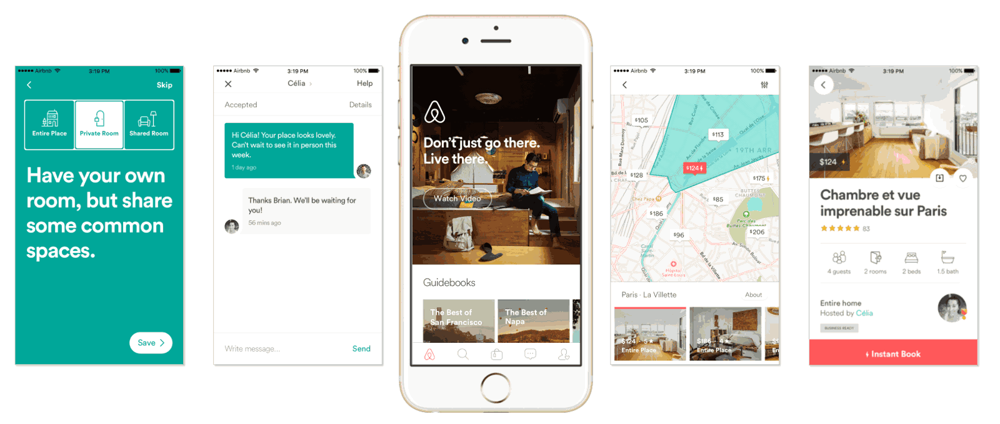
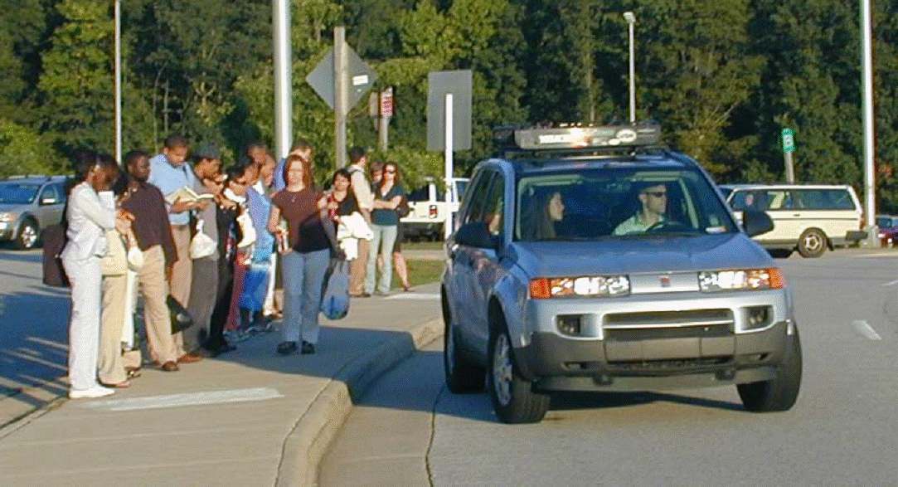
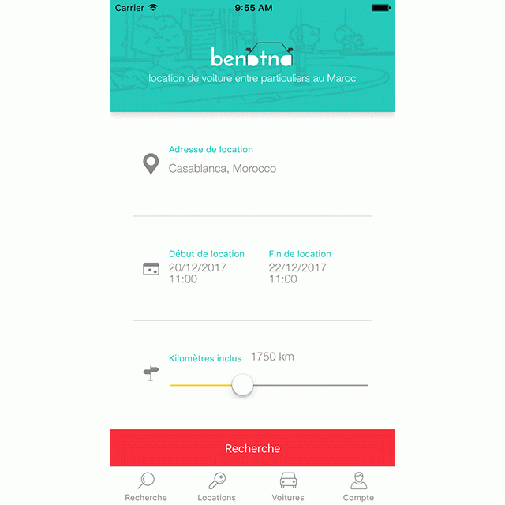

“Posséder, c’est dépassé”. C’est le slogan d'une campagne du loueur automobile Rent a Car, qui reprend à son compte une tendance économique lourde : la disgrâce de la possession de biens matériels, au profit de services de location.Cette nouvelle tendance touche de plein fouet l’industrie automobile. Cela fait déjà plusieurs années que les constructeurs essaient de redéfinir leurs positionnements; ils ne veulent plus vendre des voitures, mais de la mobilité. Mais il ne s’agit heureusement pas que de sémantique : 2017 pourrait bien être une année charnière dans la transformation des usages de l’automobile, avec le lancement du service presque homonyme, mais parfaitement complémentaire : Benatna.
D’un côté le grand projet de la ville de Casablanca avec Casa Tramway, qui lance fin 2016 les travaux de ses nouvelles lignes et le concept de Smart City. De l’autre notre petite startup, première d’un secteur inexistant en Afrique : la location de voiture entre particuliers.
Benatna est l’eBay de la location de voiture. Le service permet de louer sa propre voiture pendant qu’elle ne sert pas, ou de partir en week-end avec la voiture de son voisin, à un prix très compétitif. Le service inclut une assurance adaptée, et un encadrement de chaque location pour que le processus soit simple et sûr.
Les propriétaires amortissent ainsi une partie de leur budget auto, et les locataires, en dehors du prix attractifs, bénéficient d’un service de proximité, flexible et convivial. En moins de 5 ans, 60 000 propriétaires et plus de 2 millions de locataires ont tenté l’expérience en France, et la courbe de progression indique que la pratique n’en est qu’à ses balbutiements.
Cette petite révolution dans l’usage de la voiture s’appuie sur 2 piliers : le peer-to-peer et le design de service innovant.
Le peer-to-peer (ou “C-to-C”, ou “entre pairs”, ou pourquoi pas simplement “particulier à particulier”), c’est le court-circuitage par les particuliers de services traditionnellement rendus par les entreprises. Les premiers secteur à en avoir fait les frais – ou les bénéfices, tout dépend du point de vue ! – ont été celui de la distribution de musique (Napster) et de l’information (blogs).
Un réseau est plus puissant et plus résilient qu’un système centralisé. Le super-calculateur le plus puissant au monde n’est plus un IBM occupant une pièce entière, mais un réseau décentralisé d’ordinateurs individuels. Dans le secteur des transports, le covoiturage a été le premier à illustrer la puissance du peer-to-peer, en assurant des millions de trajets, avec des investissements très faibles.
L’innovation dans le design de service (UX design), c’est réinventer un service à partir de zéro, en partant des besoins des utilisateurs. La location de voiture est un vieux secteur, et pourtant c’est une startup, Zipcar, qui a réinventé son fonctionnement : finie la file d’attente dans les agences, on s’abonne à des voitures que l’on peut ouvrir avec son smartphone.
La voiture partagée, sous toutes ses formes, a de beaux jours devant elle. Les bénéfices pour l’utilisateur sont indiscutables : au lieu de posséder une voiture dans un lieu unique avec la responsabilité du stationnement et de l’entretien, on a accès à des milliers de voitures de toutes les formes (monospace pour Ikea, cabriolet pour le week-end) et partout au Maroc (au coin de la rue ou à la sortie du futur TGV).
La planète aussi a beaucoup à y gagner. La voiture partagée reste de la voiture, et donc des émissions de CO2 élevées. Mais le seul fait de rendre variable le coût de l’automobile est un pas-de-géant : les personnes qui s’inscrivent à des dispositifs d’auto-partage se mettent à rouler moins. Parce qu'au lieu de payer pour aller acheter leur baguette en voiture, ils prennent leur vélo. Autre avantage évident, remplacer 10 voitures individuelles par 1 voiture partagée, c’est 10 fois moins d’espace de stationnement – de quoi changer la physionomie de nos villes.
Un chauffeur ramasse des passagers (appelés le Slugging, aussi connu comme le covoiturage occasionnel) à un endroit clés, étant donné que ces passagers supplémentaires signifient que le conducteur peut utiliser une voie réservée aux véhicules multi-occupants ou bénéficier d' une réduction d'impôt
Si les précédents arguments ne suffisaient pas, la pression sur les individualistes de l’automobile ne va de toute façon faire qu’augmenter : stationnement limité, circulation taxée en centre-ville.
Notre vision, c’est donc une voiture en libre-service à tous les coins de rue, et un siège libre accessible dans toutes les voitures qui passent devant vous – le Graal du covoiturage dynamique. À quelle vitesse allons-nous passer du bac à sable à une pratique de masse ?
Plus que de technologie brute, le succès des services de voiture partagée dépend du design de service évoqué plus haut. Des centaines de détails à régler dont on ne parle pas. Lorsque j’ai vendu ma voiture pour m’abonner à un service d’auto-partage à Bordeaux, la sensation de liberté était bien au rendez-vous. Mais les freins viennent de détails comme l’ergonomie du site de réservation, les 20 secondes perdues au démarrage pour constater l’état du véhicule, ou encore la disponibilité des opérateurs pour prolonger une location. Tout cela est soluble, mais prend du temps. Il ne se passe pas une semaine sans que nous apportions une modification à Benatna, et la liste d’améliorations à venir est interminable.
La relation entre la voiture partagée et les autres modes de transport est également un enjeu essentiel. La voiture individuelle façon 20 éme siècle était parfaitement autonome. La voiture partagée, elle, dépend énormément des transports en commun. Les systèmes d’information du train, du bus, du covoiturage, de la location de voiture doivent devenir ouverts et compatibles, et les hubs (gares, aires de stationnement à l’entrée des villes, etc…) s’améliorer. Même les taxis, très occupés à dénoncer la concurrence déloyale des nouveaux venus, ont un rôle majeur à jouer : ils sont l’huile dans les rouages, le joker en cas de connexion manquée.
Bref, la voiture va enfin apprendre à vivre en société. Être plus discrète, plus serviable, et apprendre à compter avec les autres (modes de transport).
En savoir plus sur Benatna !